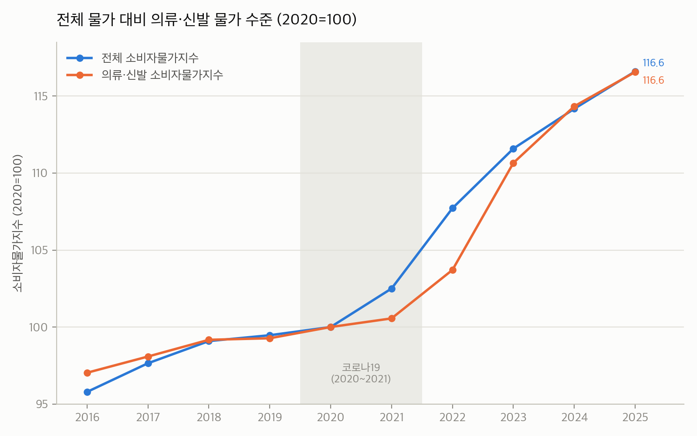
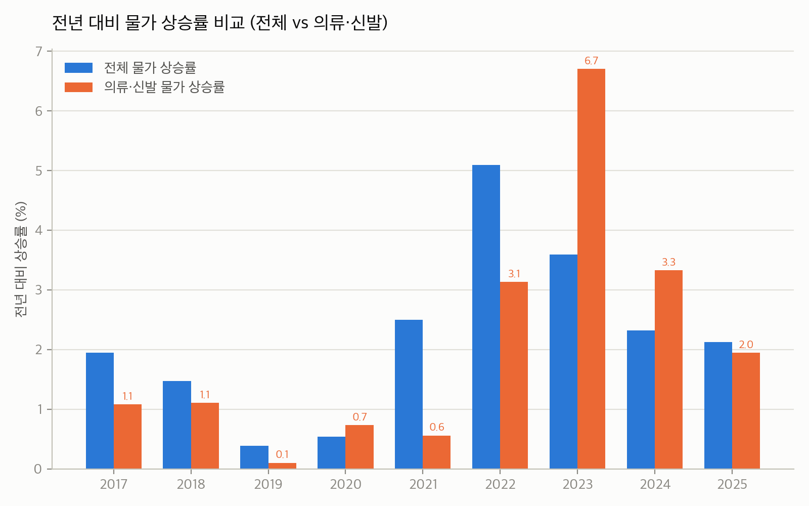
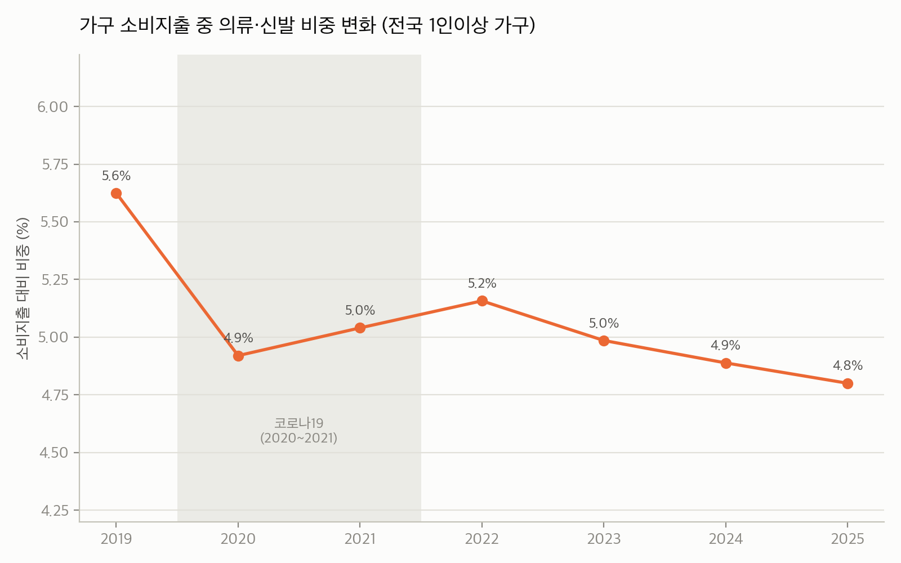

데이터리터러시 · 의류학과 관점 데이터 분석
전체 물가 대비 의류·신발 물가 상승률, 가계 소비지출 중 의류 비중 변화, 코로나19 전후 패턴을 데이터로 확인하고 패스트패션·소비 트렌드 관점에서 해석합니다.
2026-10-16 · 출처: KOSIS(국가통계포털) Open API, 공개 뉴스 4건
한눈에 보기
의류·신발 물가는 장기적으로는 전체 물가보다 덜 올랐지만, 특정 시기에 급등했고 — 가계가 실제로 쓰는 돈의 비중은 꾸준히 줄고 있습니다.
출처: KOSIS DT_1J22001, DT_1L9U101 [1][2]
① 전체 물가 대비 의류·신발 물가
2020=100, 연간 · KOSIS DT_1J22001 [1]
① 전체 물가 대비 의류·신발 물가
전년 대비, 연간 · KOSIS DT_1J22001 [1]
② 가구 소비지출 중 의류 비중
전국 1인이상 가구, 연간 · KOSIS DT_1L9U101 [2]
③ 코로나19 전후 변화
수요가 먼저 꺾이고, 이후 공급이 비싸졌습니다 — 코로나는 지출 비중의 하향 추세를 가속한 계기로 보입니다.
의류·신발 CPI는 연 1%대로 완만히 올랐고, 가계지출 비중은 5.6%였습니다.
가구 의류 지출은 2020년 전년 대비 -14.5% 급감했지만, 물가는 거의 밀리지 않았습니다.
억눌린 수요가 풀리며 물가가 급등(2023년 +6.7%)했지만, 지출 비중은 2022년 5.2%에서 2025년 4.8%로 다시 줄었습니다.
출처: KOSIS DT_1J22001, DT_1L9U101 [1][2]
④ 뉴스로 보는 원인
최근 보도 4건을 데이터 흐름과 겹쳐보면, "싸게 많이"에서 "따져서 신중하게"로 이동하는 소비 전환이 보입니다.
종합 해석 · 의류학과 관점
물가(①)는 공급망 충격마다 스파이크를 그리는데, 가계 지출 비중(②)은 오히려 추세적으로 줄고 있습니다. 패스트패션 업계가 가격 인상(관세·원가 압박 [4])과 수요 둔화(경기·기후 [5])라는 양방향 압박을 동시에 받으면서, 중고·리세일 플랫폼 확산과 '적게 사지만 신중하게 사는' 소비 트렌드가 구조적으로 자리잡고 있습니다. 업계의 '효율화' 선언[6]은 이런 소비자 변화에 대한 산업의 응답으로 읽을 수 있습니다.
한계 및 유의사항
가구지출은 명목 금액입니다. 물가 상승분이 포함돼 있어, 실질(수량) 변화를 보려면 실질 가계수지 표(DT_1L9U118)로 교차 검증이 필요합니다.
가구지출 시계열은 2019년부터만 존재합니다. 그 이전은 2인이상 가구 기준의 별도 표(DT_1L9N002)라 가구 정의가 달라 단순 연결하지 않았습니다.
뉴스 표본은 4건입니다. 2025.12~2026.09 보도에 집중돼 있어, 추세의 '최신 스냅숏' 성격이 강하고 대표성에는 한계가 있습니다.
부록



전체 산출 코드·원자료: analysis/report.md, data/kosis/, data/news/
감사합니다